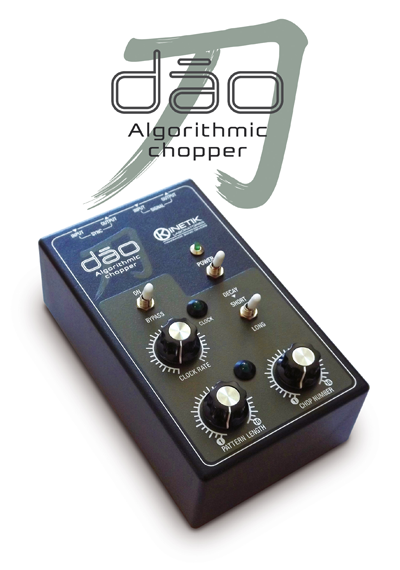
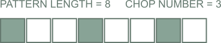
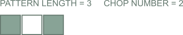

DAO

Production year: 2017
Dāo is a pattern controlled gater capable of turning every signal connected to the INPUT JACK into a rhythmic sequence, passing or muting it toward the OUTPUT JACK.
The rhythm patterns are based on the position of two knobs, PATTERN LENGTH and CHOP NUMBER, allowing an intuitive use of the device. Users can generate up to 136 patterns by setting these knobs.
The ON/BYPASS switch is used to turn the effect on and to start the pattern generation.
The CLOCK RATE knob is used to set the internal sequencer tempo.
The DECAY switch is used to choose the chopped audio slices length. Using SHORT setting is possible to obtain percussive sounds from every kind of continuous sound as pads, drone and noise sounds.
Dāo generates a 5 Volts pulse, at the beginning of each step, on the SYNC OUTPUT jack. It can also be synchronized to external devices using the SYNC INPUT jack. When a jack is connected to the SYNC INPUT, the CLOCK RATE knob has no effect and the sync signal is replicated to the SYNC OUTPUT allowing synchronization of compatible equipment.
Dāo must be supplied with an external power supply, providing 9vDC on 2.1mm barrel jack, negative tip.
Dāo rhythm patterns are generated using the Euclidean algorithm, one of the oldest algorithms known. Godfried Toussaint, a computer scientist based in Montreal’s McGill University, has pointed out a connection between the mathematical procedure and most of the musical rhythms. His research paper can be found here.
Dāo rhythm patterns are based on reverse Euclidean strings and have a strong musical appeal.
The pattern length can be selected by using the corresponding knob, in a range from 1 to 16 steps. The CHOP NUMBER knob is used to define how many slices of the input signal are passed to the output.
By way of example, here are some rhythm patterns obtained by setting PATTERN LENGTH and CHOP NUMBER:

This rhythm, called Tresillo, is one of the fundamental rhythms in Cuban music. This pattern is also the most prevalent rhythm in Sub-Saharan African music traditions.

This rhythm pattern is widely used in Afro-Cuban and Latin American music.
Using several synchronized Dāo is possible to obtain interesting polyrhythmic sequences, since every device can be set to different pattern length.